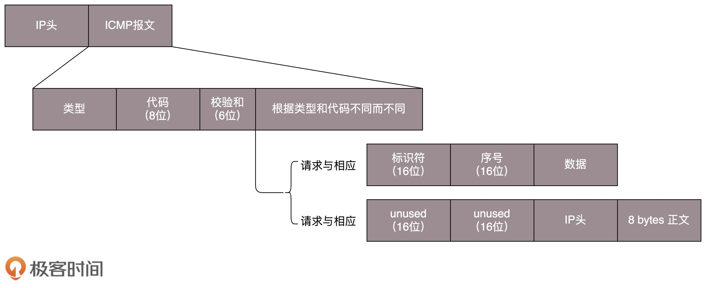

- 00 开篇词 想成为技术牛人？先搞定网络协议！.md
- 01 为什么要学习网络协议？.md
- 02 网络分层的真实含义是什么？.md
- 03 ifconfig：最熟悉又陌生的命令行.md
- 04 DHCP与PXE：IP是怎么来的，又是怎么没的？.md
- 05 从物理层到MAC层：如何在宿舍里自己组网玩联机游戏？.md
- 06 交换机与VLAN：办公室太复杂，我要回学校.md
- 07 ICMP与ping：投石问路的侦察兵.md
- 08 世界这么大，我想出网关：欧洲十国游与玄奘西行.md
- 09 路由协议：西出网关无故人，敢问路在何方.md
- 10 UDP协议：因性善而简单，难免碰到“城会玩”.md
- 11 TCP协议（上）：因性恶而复杂，先恶后善反轻松.md
- 12 TCP协议（下）：西行必定多妖孽，恒心智慧消磨难.md
- 13 套接字Socket：Talk is cheap, show me the code.md
- 14 HTTP协议：看个新闻原来这么麻烦.md
- 15 HTTPS协议：点外卖的过程原来这么复杂.md
- 16 流媒体协议：如何在直播里看到美女帅哥？.md
- 17 P2P协议：我下小电影，99%急死你.md
- 18 DNS协议：网络世界的地址簿.md
- 19 HttpDNS：网络世界的地址簿也会指错路.md
- 20 CDN：你去小卖部取过快递么？.md
- 21 数据中心：我是开发商，自己拿地盖别墅.md
- 22 VPN：朝中有人好做官.md
- 23 移动网络：去巴塞罗那，手机也上不了脸书.md
- 24 云中网络：自己拿地成本高，购买公寓更灵活.md
- 25 软件定义网络：共享基础设施的小区物业管理办法.md
- 26 云中的网络安全：虽然不是土豪，也需要基本安全和保障.md
- 27 云中的网络QoS：邻居疯狂下电影，我该怎么办？.md
- 28 云中网络的隔离GRE、VXLAN：虽然住一个小区，也要保护隐私.md
- 29 容器网络：来去自由的日子，不买公寓去合租.md
- 30 容器网络之Flannel：每人一亩三分地.md
- 31 容器网络之Calico：为高效说出善意的谎言.md
- 32 RPC协议综述：远在天边，近在眼前.md
- 33 基于XML的SOAP协议：不要说NBA，请说美国职业篮球联赛.md
- 34 基于JSON的RESTful接口协议：我不关心过程，请给我结果.md
- 35 二进制类RPC协议：还是叫NBA吧，总说全称多费劲.md
- 36 跨语言类RPC协议：交流之前，双方先来个专业术语表.md
- 37 知识串：用双十一的故事串起碎片的网络协议（上）.md
- 38 知识串：用双十一的故事串起碎片的网络协议（中）.md
- 39 知识串：用双十一的故事串起碎片的网络协议（下）.md
- 40 搭建一个网络实验环境：授人以鱼不如授人以渔.md
- 加餐1 创作故事：我是如何创作“趣谈网络协议”专栏的？.md
- 协议专栏特别福利 答疑解惑1期.md
- 协议专栏特别福利 答疑解惑2期.md
- 协议专栏特别福利 答疑解惑3期.md
- 协议专栏特别福利 答疑解惑4期.md
- 协议专栏特别福利 答疑解惑5期.md
- 结束语 放弃完美主义，执行力就是限时限量认真完成.md
07 ICMP与ping：投石问路的侦察兵
无论是在宿舍，还是在办公室，或者运维一个数据中心，我们常常会遇到网络不通的问题。那台机器明明就在那里，你甚至都可以通过机器的终端连上去看。它看着好好的，可是就是连不上去，究竟是哪里出了问题呢？
ICMP协议的格式
一般情况下，你会想到ping一下。那你知道ping是如何工作的吗？
ping是基于ICMP协议工作的。ICMP全称Internet Control Message Protocol，就是互联网控制报文协议。这里面的关键词是“控制”，那具体是怎么控制的呢？
网络包在异常复杂的网络环境中传输时，常常会遇到各种各样的问题。当遇到问题的时候，总不能“死个不明不白”，要传出消息来，报告情况，这样才可以调整传输策略。这就相当于我们经常看到的电视剧里，古代行军的时候，为将为帅者需要通过侦察兵、哨探或传令兵等人肉的方式来掌握情况，控制整个战局。
ICMP报文是封装在IP包里面的。因为传输指令的时候，肯定需要源地址和目标地址。它本身非常简单。因为作为侦查兵，要轻装上阵，不能携带大量的包袱。

ICMP报文有很多的类型，不同的类型有不同的代码。最常用的类型是主动请求为8，主动请求的应答为0。
查询报文类型
我们经常在电视剧里听到这样的话：主帅说，来人哪！前方战事如何，快去派人打探，一有情况，立即通报！
这种是主帅发起的，主动查看敌情，对应ICMP的查询报文类型。例如，常用的**ping就是查询报文，是一种主动请求，并且获得主动应答的ICMP协议。**所以，ping发的包也是符合ICMP协议格式的，只不过它在后面增加了自己的格式。
对ping的主动请求，进行网络抓包，称为ICMP ECHO REQUEST。同理主动请求的回复，称为ICMP ECHO REPLY。比起原生的ICMP，这里面多了两个字段，一个是标识符。这个很好理解，你派出去两队侦查兵，一队是侦查战况的，一队是去查找水源的，要有个标识才能区分。另一个是序号，你派出去的侦查兵，都要编个号。如果派出去10个，回来10个，就说明前方战况不错；如果派出去10个，回来2个，说明情况可能不妙。
在选项数据中，ping还会存放发送请求的时间值，来计算往返时间，说明路程的长短。
差错报文类型
当然也有另外一种方式，就是差错报文。
主帅骑马走着走着，突然来了一匹快马，上面的小兵气喘吁吁的：报告主公，不好啦！张将军遭遇埋伏，全军覆没啦！这种是异常情况发起的，来报告发生了不好的事情，对应ICMP的差错报文类型。
我举几个ICMP差错报文的例子：终点不可达为3，源抑制为4，超时为11，重定向为5。这些都是什么意思呢？我给你具体解释一下。
第一种是终点不可达。小兵：报告主公，您让把粮草送到张将军那里，结果没有送到。
如果你是主公，你肯定会问，为啥送不到？具体的原因在代码中表示就是，网络不可达代码为0，主机不可达代码为1，协议不可达代码为2，端口不可达代码为3，需要进行分片但设置了不分片位代码为4。
具体的场景就像这样：
- 网络不可达：主公，找不到地方呀？
- 主机不可达：主公，找到地方没这个人呀？
- 协议不可达：主公，找到地方，找到人，口号没对上，人家天王盖地虎，我说12345！
- 端口不可达：主公，找到地方，找到人，对了口号，事儿没对上，我去送粮草，人家说他们在等救兵。
- 需要进行分片但设置了不分片位：主公，走到一半，山路狭窄，想换小车，但是您的将令，严禁换小车，就没办法送到了。
第二种是源站抑制，也就是让源站放慢发送速度。小兵：报告主公，您粮草送的太多了吃不完。
第三种是时间超时，也就是超过网络包的生存时间还是没到。小兵：报告主公，送粮草的人，自己把粮草吃完了，还没找到地方，已经饿死啦。
第四种是路由重定向，也就是让下次发给另一个路由器。小兵：报告主公，上次送粮草的人本来只要走一站地铁，非得从五环绕，下次别这样了啊。
差错报文的结构相对复杂一些。除了前面还是IP，ICMP的前8字节不变，后面则跟上出错的那个IP包的IP头和IP正文的前8个字节。
而且这类侦查兵特别恪尽职守，不但自己返回来报信，还把一部分遗物也带回来。
- 侦察兵：报告主公，张将军已经战死沙场，这是张将军的印信和佩剑。
- 主公：神马？张将军是怎么死的（可以查看ICMP的前8字节）？没错，这是张将军的剑，是他的剑（IP数据包的头及正文前8字节）。
ping：查询报文类型的使用
接下来，我们重点来看ping的发送和接收过程。

假定主机A的IP地址是192.168.1.1，主机B的IP地址是192.168.1.2，它们都在同一个子网。那当你在主机A上运行“ping 192.168.1.2”后，会发生什么呢?
ping命令执行的时候，源主机首先会构建一个ICMP请求数据包，ICMP数据包内包含多个字段。最重要的是两个，第一个是类型字段，对于请求数据包而言该字段为 8；另外一个是顺序号，主要用于区分连续ping的时候发出的多个数据包。每发出一个请求数据包，顺序号会自动加1。为了能够计算往返时间RTT，它会在报文的数据部分插入发送时间。
然后，由ICMP协议将这个数据包连同地址192.168.1.2一起交给IP层。IP层将以192.168.1.2作为目的地址，本机IP地址作为源地址，加上一些其他控制信息，构建一个IP数据包。
接下来，需要加入MAC头。如果在本节ARP映射表中查找出IP地址192.168.1.2所对应的MAC地址，则可以直接使用；如果没有，则需要发送ARP协议查询MAC地址，获得MAC地址后，由数据链路层构建一个数据帧，目的地址是IP层传过来的MAC地址，源地址则是本机的MAC地址；还要附加上一些控制信息，依据以太网的介质访问规则，将它们传送出去。
主机B收到这个数据帧后，先检查它的目的MAC地址，并和本机的MAC地址对比，如符合，则接收，否则就丢弃。接收后检查该数据帧，将IP数据包从帧中提取出来，交给本机的IP层。同样，IP层检查后，将有用的信息提取后交给ICMP协议。
主机B会构建一个 ICMP 应答包，应答数据包的类型字段为 0，顺序号为接收到的请求数据包中的顺序号，然后再发送出去给主机A。
在规定的时候间内，源主机如果没有接到 ICMP 的应答包，则说明目标主机不可达；如果接收到了 ICMP 应答包，则说明目标主机可达。此时，源主机会检查，用当前时刻减去该数据包最初从源主机上发出的时刻，就是 ICMP 数据包的时间延迟。
当然这只是最简单的，同一个局域网里面的情况。如果跨网段的话，还会涉及网关的转发、路由器的转发等等。但是对于ICMP的头来讲，是没什么影响的。会影响的是根据目标IP地址，选择路由的下一跳，还有每经过一个路由器到达一个新的局域网，需要换MAC头里面的MAC地址。这个过程后面几节会详细描述，这里暂时不多说。
如果在自己的可控范围之内，当遇到网络不通的问题的时候，除了直接ping目标的IP地址之外，还应该有一个清晰的网络拓扑图。并且从理论上来讲，应该要清楚地知道一个网络包从源地址到目标地址都需要经过哪些设备，然后逐个ping中间的这些设备或者机器。如果可能的话，在这些关键点，通过tcpdump -i eth0 icmp，查看包有没有到达某个点，回复的包到达了哪个点，可以更加容易推断出错的位置。
经常会遇到一个问题，如果不在我们的控制范围内，很多中间设备都是禁止ping的，但是ping不通不代表网络不通。这个时候就要使用telnet，通过其他协议来测试网络是否通，这个就不在本篇的讲述范围了。
说了这么多，你应该可以看出ping这个程序是使用了ICMP里面的ECHO REQUEST和ECHO REPLY类型的。
Traceroute：差错报文类型的使用
那其他的类型呢？是不是只有真正遇到错误的时候，才能收到呢？那也不是，有一个程序Traceroute，是个“大骗子”。它会使用ICMP的规则，故意制造一些能够产生错误的场景。
所以，Traceroute的第一个作用就是故意设置特殊的TTL，来追踪去往目的地时沿途经过的路由器。Traceroute的参数指向某个目的IP地址，它会发送一个UDP的数据包。将TTL设置成1，也就是说一旦遇到一个路由器或者一个关卡，就表示它“牺牲”了。
如果中间的路由器不止一个，当然碰到第一个就“牺牲”。于是，返回一个ICMP包，也就是网络差错包，类型是时间超时。那大军前行就带一顿饭，试一试走多远会被饿死，然后找个哨探回来报告，那我就知道大军只带一顿饭能走多远了。
接下来，将TTL设置为2。第一关过了，第二关就“牺牲”了，那我就知道第二关有多远。如此反复，直到到达目的主机。这样，Traceroute就拿到了所有的路由器IP。当然，有的路由器压根不会回这个ICMP。这也是Traceroute一个公网的地址，看不到中间路由的原因。
怎么知道UDP有没有到达目的主机呢？Traceroute程序会发送一份UDP数据报给目的主机，但它会选择一个不可能的值作为UDP端口号（大于30000）。当该数据报到达时，将使目的主机的 UDP模块产生一份“端口不可达”错误ICMP报文。如果数据报没有到达，则可能是超时。
这就相当于故意派人去西天如来那里去请一本《道德经》，结果人家信佛不信道，消息就会被打出来。被打的消息传回来，你就知道西天是能够到达的。为什么不去取《心经》呢？因为UDP是无连接的。也就是说这人一派出去，你就得不到任何音信。你无法区别到底是半路走丢了，还是真的信佛遁入空门了，只有让人家打出来，你才会得到消息。
**Traceroute还有一个作用是故意设置不分片，从而确定路径的MTU。**要做的工作首先是发送分组，并设置“不分片”标志。发送的第一个分组的长度正好与出口MTU相等。如果中间遇到窄的关口会被卡住，会发送ICMP网络差错包，类型为“需要进行分片但设置了不分片位”。其实，这是人家故意的好吧，每次收到ICMP“不能分片”差错时就减小分组的长度，直到到达目标主机。
小结
好了，这一节内容差不多了，我来总结一下：
- ICMP相当于网络世界的侦察兵。我讲了两种类型的ICMP报文，一种是主动探查的查询报文，一种异常报告的差错报文；
- ping使用查询报文，Traceroute使用差错报文。
最后，给你留两个思考题吧。
- 当发送的报文出问题的时候，会发送一个ICMP的差错报文来报告错误，但是如果ICMP的差错报文也出问题了呢？
- 这一节只说了一个局域网互相ping的情况。如果跨路由器、跨网关的过程会是什么样的呢？
欢迎你留言和我讨论。趣谈网络协议，我们下期见！
© 2019 - 2023 Liangliang Lee. Powered by Vert.x and hexo-theme-book.